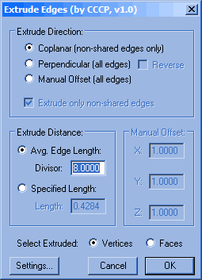
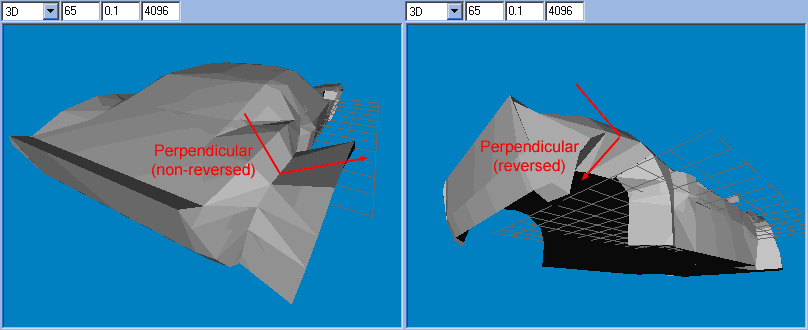
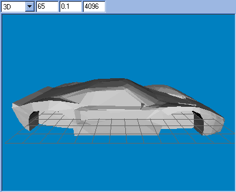

Thanks to a very powerful tool (created by MilkShape user CCCP) it is now possible to extrude edges on your models created in MilkShape 3D, simply by selecting the vertices along the desired edges and invoking the tool, choosing the desired options and pressing OK. This small tutorial will hopefully help in using this convenient tool. CCCP has also compiled a page of information about this tool available at: http://www.geocities.com/c3p1models/extrude.html.
For the purpose of demonstrating the tool, I had previously created a model of a Ford GT40 Mark 1. I will use the extrude edges tool to create the wheel recesses in the car's body. Here is a breakdown of the process.
|
Note: |
1. After getting a good view of the vertices in question, select them in the Right 2D viewport. Please note that I could have selected them in the 3D perspective viewport by using the Alt+Shift+Left Click key combination and clicking on each vertex in turn that forms the wheel arch, in this case however, the 2D viewport gave a better view; and use of the Ignore Backfaces option meant that I would only select the vertices along the wheel arch edge on the right side of the model. The image below shows the selected wheel arch vertices.

2. Invoke the Extrude Edges tool through the menu command Vertex | Extrude Edges (the plug-in resides in this menu by default - it can be changed using the Settings button at the bottom of the dialog box). Here is a brief (or not so brief) run down of the various options available.

Coplanar: The extruded edges will be an 'extension' to the faces sharing the edge which is being extruded. So the surface including the new extrusion will be flat, i.e. the vertices of the new extrusion will be closer to meeting in the middle of the wheel arch.
Perpendicular: The extruded faces will be perpendicular to the faces sharing the extruded edge, so the surface including the new extrusion will form a lip, or corner. The reverse checkbox determines in which direction the lip will go.

Manual Offset: This option, when enabled will allow you to manually type in an extrusion amount. The three edit boxes under the Manual Offset group panel (shown ghosted in the above image of the Extrude Edges dialog) will become enabled and allow you to enter an amount of extrusion along each of the world axis. For example, an amount of X: -7.0, Y: 0.0, Z: 0.0 gives the following result (note that the extrusion is flush to the extruded edge because it was extruded along the X axis only):
Extrude only Non-Shared Edges: This checkbox (when unchecked) enables the extrusion of all edges between the selected vertices, for example this allows for easy extrusion of the edges of a circular disk without extruding all of the edges that connect with the outside edge and the center vertex, as shown below (for the selection of our wheel arch this option is of no consequence as it does not effect us):
Average Edge Length: This option used a divisor to determine the length of the extrusion. The higher the divider the shorter the extrusion.
Specified Length: Allows the length of the extrusion to be set directly. The edit box here will always contain the length of the extrusion determined by the settings on the rest of the dialog.
Select Extruded: This option allows the user to set what is selected after the operation is complete. If Vertices is selected then the new vertices will be selected after the operation, and the new faces if the Faces option is selected.
3. I used the Coplanar option (the Manual option may be a better choice but I want the resultant extrusion to merge in a bit towards the center of the car). I used the Average Edge Length option and set the Divisor to 8. With the Vertices option set on the Select Extruded option press OK. The selected vertices are then moved back along the X axis by pressing Move in the model panel, then entering -7 in the box above the X button on the Move Options group panel. This gives the following result (this could have been achieved using the Perpendicular option but doing it this way gave cleaner results):

4. With the resulting moved vertices still selected I aligned them on the X axis by pressing Ctrl+Shift+X. This is to make sure that the wheel recess wall is flat when it is created.
5. With the vertices still selected, extrude the edges again using the Coplanar option with a Specified Length of -1 - remember this value for later on and Vertices selected under the Select Extruded option.
6. Now hit Ctrl+N to snap the selected vertices together (Vertex | Snap Together), and then Ctrl+W to weld them (Vertex | Weld Together). Move the resultant vertex back along the X axis by 1 - the value that was remembered from the last step. We are moving the vertex 'back' which means we have to specify a value that is the negative of the number used in the extrude dialog, the negative of -1 is 1. We now have a vertex that is flush with the first extrusion's vertices.
7. Move the selected vertex down a bit to match the rest of the underside edge of the car and you have a finished wheel recess.
